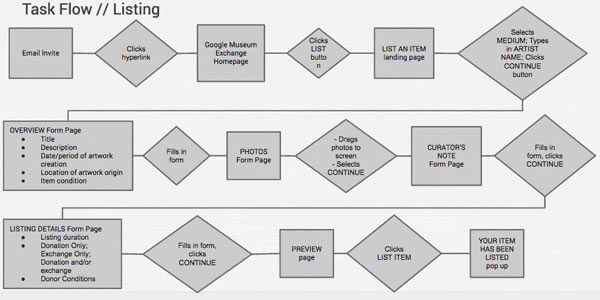
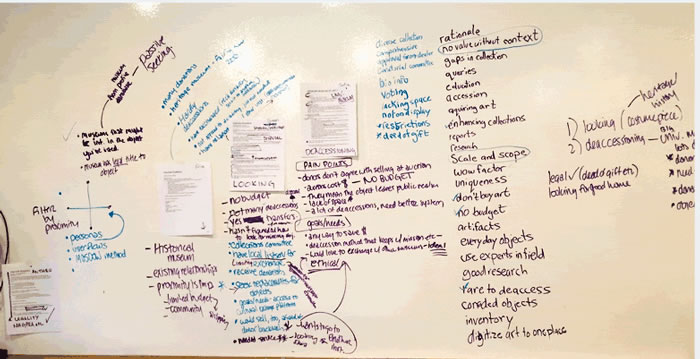
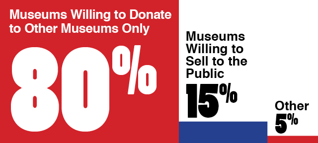
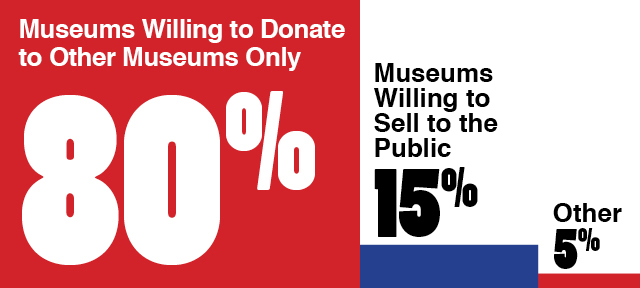

Google Museum Exchange
Museums and galleries would like to expand into the digital space by allowing customers to view and bid on pieces of art. Exploration and initial research of the problem led to: Museum websites are solving this problem in a variety of ways as well as the Google Art Project Sites like Artsy, which accomplish both goals, are succeeding in their user experiences Museums don’t sell their art the way galleries do, they deaccession by exchange or sale So, what about deaccessioning? Deaccessioning is a delicate & potentially controversial practice Museums are not like other businesses: there is a higher mission, non-profit structure The term "deaccession" means that a work is removed from the collection and considered for disposal by sale or exchange. Any deaccession of a work should be solely for the advancement of the Museum's mission.
Design Team
The UX Design Team that worked on this General Assembly project was Marga Javier, Melaine O'Donnell and myself.
What is the Google Art Project?
Google Art Project, an initiative of the Google Cultural Institute, is a collaboration between Google and over 250 acclaimed art partners from more than 40 countries. Using a combination of various Google technologies and expert information provided by our museum partners, we have created a unique online art experience. Users can explore a wide range of artworks at brushstroke level detail, take a virtual tour of a museum and even build their own collections to share. Few people will ever be lucky enough to be able to visit every museum or see every work of art they’re interested in but now many more can enjoy over 40,000 works of art, from sculpture to architecture and drawings all in one place. Google, with many team members working across different product lines, has the technology to make this kind of project a reality.
Survey and Research Results
61 people from the Museum industry, specifically in Collections Management roles, responded to our survey. We heard from a variety of Museum types: History, Art, Science, Children’s, Museums which are a combination of these types and specialized museums. Reasons for deaccession varies: destruction/disposal, donation (to another institution), putting up for sale at auction. Museums are not consistent in how often deaccession objects: some do it periodically, other when they review collections, etc. Aside from disposal, most museums deaccession because: they have items that did not fit the institution’s mission, lack of space, having duplicates of the item.
Research and Tech Background
In doing a responsive website, we took into consideration that various people from the Museum industry use different DEVICES for different tasks. for data input, many of them use laptops or PCs as well which is our main consideration for doing the Listing flow on PC/Laptop screen sizes, but unavailable for Tablets & Smartphones. we made the pages for the searching flow, responsive as it is more likely that they can be using various devices in looking for an item and stakeholders are likely to be in different places using different devices when taking a look at an item they would like to acquire. In doing a responsive website, we took into consideration that various people from the Museum industry use different DEVICES for different tasks. for data input, many of them use laptops or PCs as well which is our main consideration for doing the Listing flow on PC/Laptop screen sizes, but unavailable for Tablets & Smartphones. we made the pages for the searching flow, responsive as it is more likely that they can be using various devices in looking for an item and stakeholders are likely to be in different places using different devices when taking a look at an item they would like to acquire. Operating Systems: As a website, it should be functional in a web browser within any OS. Interface Guidelines: As a Google Cultural Institute (GCI) microsite, interface and functionality were mostly based on the Google Art Project (GAP). Branding and personality were based on the GAP. For mobile devices, interface choices and iconography also takes into consideration that this platform was envisioned under Google --- hence Android/Material Design iconography was prioritized. APIs: Google Custom Search API, Google Maps for tagging location where artwork was created, Mediawiki for birth date, death date and nationality of Artist. Data: Database management system for Listings.
Interviews
We interviewed 6 people from the industry - 1 curator and 5 museum registrars These people came from different museum types and sizes. They were asked questions about deaccessioning and their deaccession process: if they deaccession, when, and if they do not deaccession, why? When deaccessioning, they commonly transfer to other museums. usually the someone from the recipient museum has a relationship with someone from the donor museum --- the curator may know their curator, they are within the same community/area. prefer transferring to another institution as it is within their mission to keep cultural treasures within the public realm It was easy for them to deal with auction houses (as they are used to this process). However: there can be donor backlash when SELLING deaccessions. would prefer transfers to other institutions to KEEP IT WITHIN THE PUBLIC REALM. cost can also be an issue and when they are deaccessioning, “it’s not about the money”. When deaccessioning items, they initially want to keep the institution’s name anonymous.
Business Goals
Google Museum Exchange helps Google build relationships with institutions through the network, which simultaneously allows museums to deaccession/acquire objects while keeping with their mission. Realizing that the bidding system feature did not address the primary user goal, we de-prioritized it.
Revised Problem
Museums were in need of a platform to deaccession artwork in a way that is in line with their mission of keeping cultural treasures in the public space.

 
